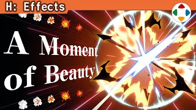
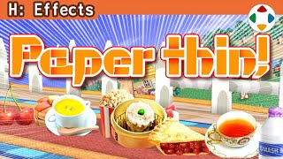
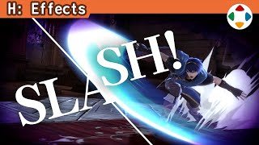
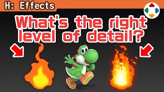
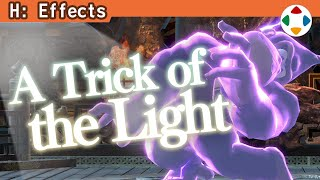
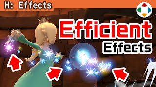

首页 / H 特效
 #12:32
#12:32让特效「脆」起来
Make It "Pop"特效分类开篇。特效多用颜色加算绘制：叠在背景上颜色趋近白色，与半透明不同。但别依赖加算：整体发雾、没有张弛，太亮，且只在暗处显眼。推荐与清脆的特效并用：以多边形或实色画好的特效为主体，并混入暗色；用相反的东西互相衬托。
 #22:11
#22:11让角色从特效中凸显
Let Your Characters Shine为了冲击力，角色常被特效埋住看不清。2D 游戏只要提高角色显示优先级；3D 中强行优先会像视差错误，印象不好。《大乱斗》在可能范围内下功夫：力量灌篮、隼龙拳中角色仍清晰；舞台中央的特效内外高度不同不挡人；还有描边的概念。

#33:26闪光、爆炎与烟
Flash, Blast, and Smoke表现爆炸时常常只是火焰一冒就完。1984 年《星际力量》的 5 帧点阵爆炸：闪光→爆炎→烟→消散，做得极好。《大乱斗》的爆炸也遵循大框架：先闪光（混入黑色，白背景也看得见），再爆炎（决定爆炸性格），再黑烟接棒，最后收束——不能太短。还有画面闪光与震动、地面与空中分开。
 #411:34
#411:34慢动作下的视觉特效
Visual Effects in Slow Motion特效在一瞬间传达大量信息，很难看全。本集把《大乱斗 特别版》中的各种特效开启慢动作、关掉背景录下来，约 10 分钟无旁白展示。仔细观察是做任何东西的捷径，也能看清动作。最后对比开关特效：关掉后很朴素——同一游戏会因特效感觉大不同。
 #53:40
#53:40画面震动
Screen Shake画面震动最适合表现巨大冲击，应积极加入，但要防止过度导致看不清。方法分两种：移动摄像机、移动绘制后的画面，各有利弊（远景不动 / 边缘露黑边）。《大乱斗》设有大中小极小与持续纵震等模式，按镜头远近调整幅度，先强后收敛并带适度随机。没有震动的游戏相当乏味。
 #64:50
#64:50命中标记（Hit Marks）
Hit Marks攻击命中时的特效叫命中标记。樱井的作品多用华丽的漫画式表现，但写实系作品要平衡。他以《大乱斗 特别版》为例，列出命中标记的 7 个条件：与效果相称的华丽、对比分明、命中位置合适、多要素并用、不遮挡角色、停留时长合适、做出明度差；并建议善用 hit stop 期间。

#72:08广告牌（Billboard）
Billboards广告牌是永远正对镜头的平面物体，多为两个多边形。《超级马力欧 64》滚下坡的铁球就是一张没动画的图；炸弹王的眼睛、王冠是模型，身体是广告牌。粒子等特效一般用广告牌显示：停下爆炸转动镜头就会发现是平面图。2D 物体绘制成本低，适合闪光等无实体特效。《大乱斗》的食物一直是广告牌；Y 轴广告牌用于特效有时会显得太瘦。

#83:59刀光（风切）
Blade Trails挥剑时留下的轨迹，他一直叫「风切」。《大乱斗》不只剑，拳脚也加类似的东西。剑的风切两种做法：沿剑经过的轨迹生成多边形（扇形，大多数），或放置一枚板多边形瞬间显示（少数，用于 1 帧挥完的剑）。轨迹从侧面可能看不见，常为此改动作。各角色风切各具个性。

#92:04特效的尺度要对
Making Effects the Right Size与角色、舞台一样，特效的尺度感也要对。尤其火焰：与角色同大甚至更大的火焰，常常看起来只有蜡烛或火把大——原因是密度（信息量）不够。监修焰之剑的火焰时给了要求的密度示例。可增加循环次数或用更小更细的粒子，但会吃贴图容量；特效一直在动，不必太细，粗犷快速是重点。

#104:12闪烁效果
Flashing Effects「闪烁」指让整个画面或角色一亮（他自己的叫法）。如今规范严、移植也趋于温和，以前在显像管上闪得厉害。画面闪光像画面震动一样用大面积增加手感；角色闪光强调状态变化。角色闪光多用颜色加算或专用光照；均匀加色会降低对比，白闪在亮画面不显眼——所以混入暗色、《特别版》给命中闪光加阴影，并按镜头距离调强度。

#114:40粒子特效的局限
The Limitations of Particle Effects大量喷出的特效一般叫粒子（包括之前讲的广告牌）。初代《星之卡比》就有类似粒子的表现，但当时什么都难出。机能提升减少了制约，但不会为零。于是设下种种限制：寿命短（用速度补偿）、把多个粒子画在一枚板上、错开时机与位置、每枚画大一点。初代卡比的击败特效其实是手工逐帧摆放星星。